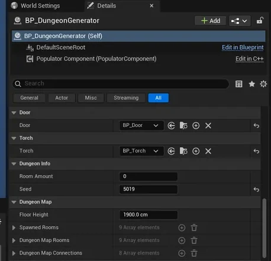
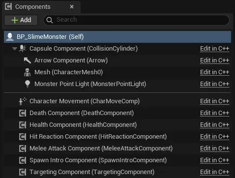
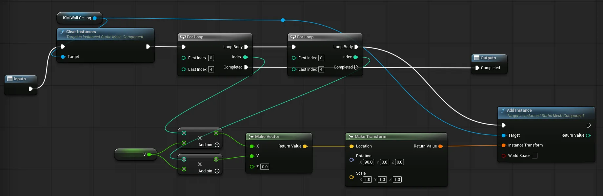

로그라이크의 던전이 매번 다르게 만들어지는 방식을 직접 확인해 보려고 시작한 개인 프로젝트입니다. 상용 엔진을 처음 쓰면서 AI도 함께 활용했으므로, 무엇을 직접 만들고 무엇을 맡길지, 받은 것을 어디까지 제 것으로 만들지가 매번 판단의 대상이었습니다.
플레이 한 판이 성립하는 만큼을 만들었으므로, 던전이 만들어지고 그 위에 몬스터와 물건이 놓이면 싸우거나 피해 탈출구까지 갈 수 있습니다.
시작 방에서 출발해 일반 방을 이어 붙이고, 탈출방 하나와 막다른 특수방을 배치한 뒤 남은 출구를 벽으로 막고 이어진 자리에 문과 횃불을 놓습니다.
방에 놓인 마커를 모아, 종류와 태그에 맞는 테이블에서 확률과 보장 규칙에 따라 몬스터·상자·코인·함정을 바닥에 맞춰 놓습니다.
플레이어와 몬스터가 같은 체력·피격 조각을 공유합니다. 몬스터는 등장 연출과 탐지, 근접 공격, 사망 처리를 각각의 컴포넌트로 나눠 가집니다.
닿으면 반응하는 물건들과 층을 오르내리는 엘리베이터, 왕복 운동으로 피해를 주는 함정을 두었습니다.
절차적 던전을 만드는 방법은 여럿이지만, 제가 끝까지 이해할 수 있으면서 나중에 구조를 자유롭게 바꿀 수 있는 것을 기준으로 골랐습니다. 그래서 손으로 미리 만든 방을 출구끼리 맞춰 이어 붙이는 방식을 택했습니다. 그리드나 타일맵을 쓰지 않으므로 방의 위치와 회전은 전적으로 출구가 결정하고, 배치가 유효한지는 겹침 검사 하나로만 정해집니다.
방과 출구, 스폰 확률의 모든 추첨이 SetSeed가 만든 스트림 하나를 지납니다. 탈출방은 남은 출구를 생성기에서 먼 순으로 정렬해 시도하므로 시작점 코앞에 붙지 않고, 특수방은 자리를 찾지 못하면 그 사실을 화면에 알리고 넘어갑니다.
새 방은 일단 놓아 본 뒤, 방이 든 겹침 박스가 다른 액터와 닿는지 검사합니다. 닿으면 그 방을 지우고 남은 횟수를 되돌려 다시 뽑으므로, 실패한 시도가 방 수를 깎지 않습니다.
방을 놓는 일은 한 프레임에 끝나지만 콜리전 오버랩은 다음 틱에 정리됩니다. 그래서 벽·문·콘텐츠를 놓는 마감을 다음 틱의 단일 콜백으로 미뤄 순서를 고정했습니다.
처음에는 스폰 위치가 고정된 멤버 변수로 박혀 있어 방마다 개수가 정해져 있었고, 어디에 둘지와 무엇을 둘지가 한곳에 묶여 있었습니다. 둘을 갈라, 위치는 방에 직접 놓는 마커가, 종류는 생성기가 든 테이블이 정하도록 했습니다.
종류(몬스터 · 아이템 · 보상 · 소품 · 함정 · 목표물)와 배치 규칙(선택 · 반드시 · 던전에 하나 · 방에 하나), 확률, 바닥에 붙일지 여부를 마커가 직접 들고 있습니다.
마커에 태그가 있으면 태그별 표를, 없으면 종류별 기본 표를 씁니다. 방에 마커를 놓고 빼는 것만으로 스폰 구성이 바뀌고, 코드는 손대지 않습니다.

조정할 값은 전부 생성기 하나의 디테일 패널에 모여 있어, 방 개수나 층 높이를 바꾸는 데 코드를 열 일이 없습니다.
아래의 Spawned Rooms와 Dungeon Map Connections는 그 시드로 나온 결과이므로, 같은 값을 넣으면 같은 던전이 다시 만들어져 버그를 같은 상황에서 재현할 수 있습니다.
동작하던 프로토타입을 접고 설명할 수 있는 구조로 다시 시작한 과정입니다.
첫 프로토타입에서는 배치 알고리즘을 제가 짜지 않고 받아 쓰는 쪽을 택했습니다. 그리드 배치와 Separation Steering, Delaunay 삼각분할, 최소 신장 트리를 엮은 구성이었고 결과도 나왔습니다. 문제는 그 위에 기능을 얹을수록 알고리즘 쪽을 따라가지 못했다는 점입니다. 오류가 나면 메시지를 그대로 넘기고 고쳐 받은 것을 다시 돌리는 사이클에 들어갔고, 어떤 부분이 왜 그렇게 동작하는지 스스로 설명하지 못했습니다.
동작하던 프로젝트를 접고, 앞 절의 출구 규칙으로 처음부터 다시 설계했습니다. 다만 모든 것을 직접 이해하려 들지는 않았고, 알고리즘 자체는 역할만 알고 넘어가되 그것을 감싸는 구조는 제가 설계한다는 선을 먼저 그었습니다. 그 선 덕분에 복잡도를 고르는 기준이 “더 정교한 것”에서 “제가 바꿀 수 있는 것”으로 바뀌었습니다.
구현 전에 계획으로 방향을 맞췄고, 코드부터 쓰기 시작하면 되돌린 뒤 계획 · 검토 · 구현 순서로 다시 진행했습니다.
한 번에 전부 바꾸자는 안도 그대로 따르지 않고, 제 상황에 맞는 더 단순한 길을 골랐습니다.
동작을 확인하는 데서 멈추지 않고 클래스별 책임과 호출 흐름을 전부 설명하게 한 뒤에 다음 단계로 넘어갔습니다.
일반 메시였을 때는 괜찮았다는 식의 단서를 주어 원인의 범위를 먼저 좁혔습니다.
당장 굴러가는 결과보다 끝까지 설명할 수 있는 구조를 택했으며, 이해하지 않고 넘어갈 범위는 미리 정해 두어야 그 선택이 방치가 되지 않는다는 것을 얻었습니다.
기능이 아니라 구조를 점검할 때라고 보고, 세 종류의 군더더기를 각각 다른 방법으로 정리한 과정입니다.
이 프로젝트의 C++는 합성 우선과 단일 책임을 따릅니다. 비대해진 클래스는 컴포넌트로 나누고 소유 액터는 조각을 조립하고 신호를 중계하기만 하는 얇은 층으로 두었으며, 좋은 구조인지는 한 곳을 고칠 때 다른 곳이 흔들리지 않는가로 판단했습니다. 그 기준으로 되짚었을 때 흔들리는 자리는 세 군데였습니다.
처음의 몬스터는 한 클래스가 탐지·공격·연출·사망·피격·체력을 전부 직접 들고 있었습니다. 동작은 했지만 공격 타이밍 하나를 손보려 해도 사망·연출 코드 사이를 헤집어야 했고, 같은 기능이 필요한 플레이어에 가져다 쓸 방법도 없었습니다.

나눈 결과는 블루프린트에서도 그대로 보입니다. 컴포넌트를 붙이고 떼는 것만으로 어떤 몬스터가 무엇을 할 수 있는지가 정해지고, 같은 조각을 플레이어가 가져다 쓰는 것도 막히지 않습니다.
방은 종류마다 C++ 중간 클래스를 하나씩 두고 그 멤버 변수에 값을 박아 변주를 주는 구조였습니다. 중간 클래스에는 고유 코드가 없어 방이 늘어날수록 종류만 늘었으므로, 블루프린트가 베이스를 직접 상속하고 멤버 변수를 수정 가능한 컨테이너로 바꿔 한 클래스에서 변주가 나오게 했습니다.
문·상자·코인은 서로 다른 물건이지만 “닿으면 반응한다”는 약속은 같습니다. 생성기와 플레이어가 상대를 무엇인지 묻지 않고 약속만 보고 신호를 보내도록, 약속을 잘게 나눠 필요한 것만 갖게 했습니다.
상자와 코인은 상호작용과 바닥에서 띄우기 둘 다 필요하므로 두 약속을 함께 가지고, 함정은 띄우기만 가져갑니다.
같은 군더더기라도 원인이 다르면 정리하는 방법도 달라야 하므로, 책임이 뭉친 몬스터는 컴포넌트로 쪼개고 껍데기만 남은 방의 중간 계층은 지웠으며 서로 다른 물건은 인터페이스로 묶었습니다.
최적화를 넣은 직후 나타난 이상 현상의 원인을 관찰로 좁혀간 과정입니다.
방 하나는 바닥과 벽·천장이 모두 같은 타일의 반복입니다. 바닥 25개에 벽·천장 41개를 더해 약 66개이고, 이를 개별 스태틱 메시로 두면 타일 수만큼 드로우 콜이 나가며 던전에는 방이 여럿이라 부담이 곱해집니다. 프레임 드랍이 직접 발생하지는 않았으나 개선할 여건이 보여 목표로 삼았습니다.
같은 메시를 한 번의 드로우 콜로 여러 개 그리는 Instanced Static Mesh로 묶었습니다. 방 안에 모여 한 번에 보이는 반복이라 인스턴스별 컬링이 필요한 HISM 대신 ISM을 골랐고, 배치는 방 블루프린트의 Construction Script에서 격자만큼 인스턴스를 까는 방식입니다.
적용 직후 에디터에서 방을 다룰 때 프레임 드랍이 생겼습니다. 방금 넣은 ISM부터 의심해 일반 메시일 때와 비교하고 인스턴스 개수를 측정했고, 그 결과 ISM은 의도대로 동작하고 있었으며 원인은 Add Instance 노드를 ForLoop의 Completed 핀에 연결해 둔 제 실수였습니다. 이를 바로잡자 런타임 드로우 콜은 의도대로 줄어 있었습니다.

원인을 추측으로 지목하지 않고 변수를 하나씩 바꿔 현상을 격리했으며, 방금 넣은 것을 먼저 의심하되 비교로 무죄가 확인되고 나서야 다음 후보로 넘어갔습니다.